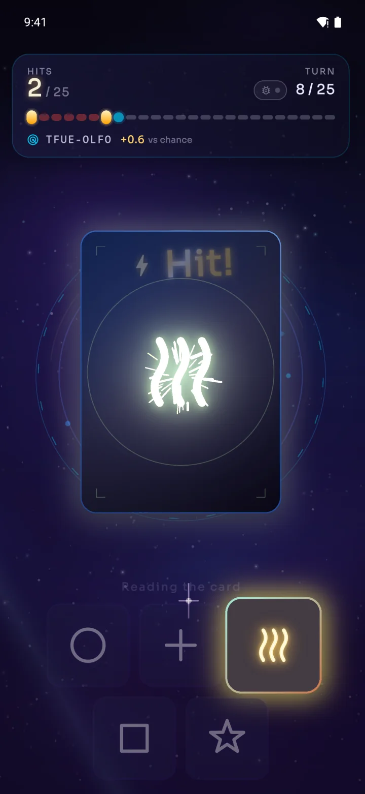

Symbol intuition
Zener
Read the signal before the card turns face up.
- A shuffled 25-card deck — five each of circle, cross, waves, square and star.
- Every reveal is a real card flip, with gold for a hit and red for a miss.
- Streak milestones fire at 3, 7 and 10.
- Each session gets its own coordinate code you can share.
